Địa điểm nổi bật
BÃI BIỂN CỒN ĐEN
Nhắc đến địa điểm check-in Thái Bình thì bãi biển cồn Đen chính là cái tên không thể không nhắc đến. Tọa lạc tại xã Thái Đô, huyện Thái Thụy, tỉnh Thái Bình, biển Cồn Đen là điểm đến thu hút khách du lịch trong những năm gần đây. Tại biển Cồn Đen, bạn có thể ghi lại hình ảnh đẹp nhất của biển và sự hoang sơ của khu rừng nguyên sinh. Đặc biệt, vào thời điểm bình minh và hoàng hôn thì vẻ đẹp nơi đây lại trở nên quyến rũ đến kỳ lạ, lúc này cũng là khoảnh khắc được nhiều người săn đón nhất. Với vẻ đẹp trong lành từ không khí cho đến mặt nước biển trong xanh cùng bãi cát trắng thì đây đích thị là một background cực xịn. Và khi đến đây check-in, bạn nhớ mang theo đồ vui chơi tắm biển để không bỏ lỡ món quà tuyệt vời này nhé.
CHÙA KEO
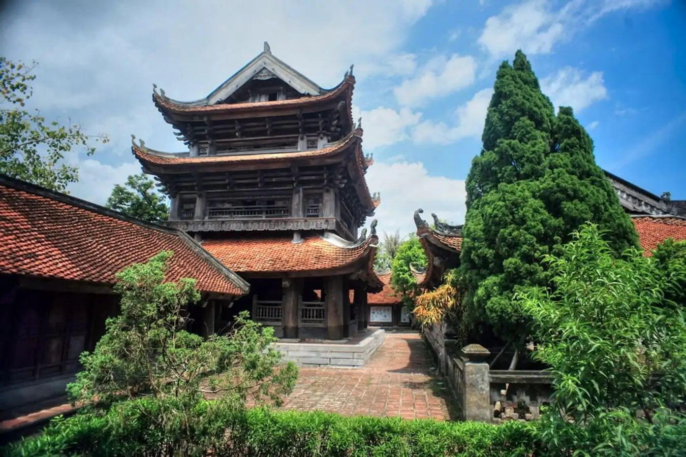
Chùa Keo ở Thái Bình được xếp hạng là ngôi chùa cổ đẹp nhất tại Việt Nam. Chùa được xây dựng theo kiến trúc cổ kín từ thời nhà Lê. Chính vì lẽ đó mà chùa Keo được xem là một trong những địa điểm check-in Thái Bình mà bạn nhất định phải đến tham quan. Ngoài ra, chùa còn là địa điểm sinh hoạt tôn giáo nổi tiếng linh thiêng. Hằng năm chùa đã đón lượt lớn du khách và Phật tử gần xa đến thăm. Vì thế nên khi đến chùa Keo, bạn hãy nhớ dâng hương và lễ Phật để gửi gắm những mong ước, cầu bình an cho gia đình nhé. Địa chỉ chùa Keo: Duy Nhất, Vũ Thư, Thái Bình.
BÃI BIỂN ĐỒNG CHÂU
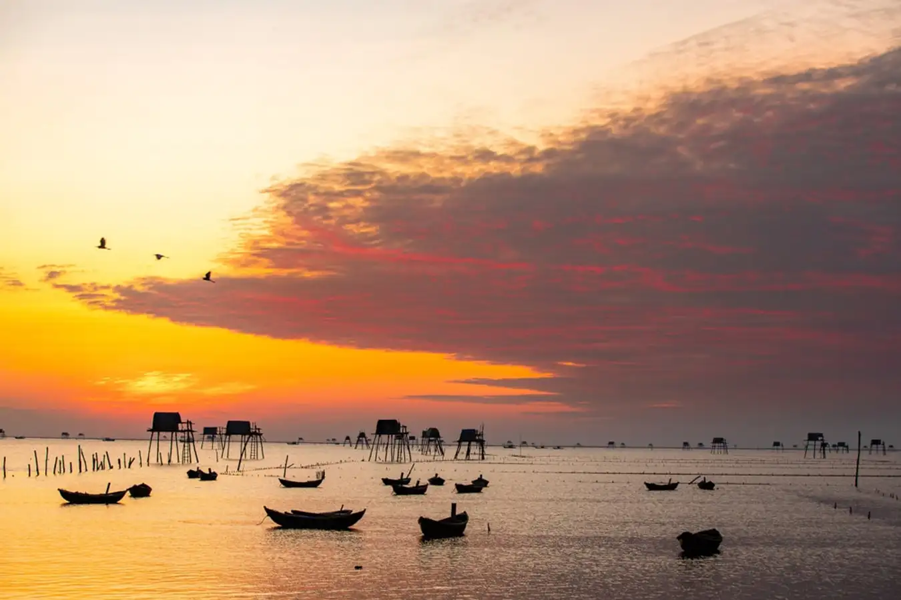
Nếu bạn đang tìm kiếm một địa điểm check-in Thái Bình còn giữ nguyên vẻ đẹp hoang sơ thì hãy đến với bãi biển Đồng Châu. Với bờ cát trải dài 5km ôm lấy mặt biển mênh mông, xanh mướt đã vẻ nên một địa điểm du lịch độc đáo tại Bắc Trung Bộ. Nếu đi Thái Bình mà không đến đây check-in với những chiếc chòi canh nhấp nhô trên mặt nước thì quả là một thiếu sót cho chuyến đi của bạn. Cách trung tâm thành phố Thái Bình khoảng 30km, bãi biển Đồng Châu có địa chỉ tại xã Đông Minh, huyện Tiền Hải nên bạn có thể kết hợp phượt và tận hưởng không khí sảng khoái trên đoạn đường đi.
BÃI BIỂN CỒN VÀNH

Cồn Vành không chỉ là một bãi biển mà nơi đây còn là một hệ sinh thái rừng ngập mặn phong phú và đã được UNESCO công nhận là khu dự trữ sinh quyển của thế giới. Với những điểm đặc biệt như thế thì đây chắc chắn sẽ là một trong những địa điểm check-in Thái Bình mà bạn không được bỏ lỡ nhé. Địa chỉ bãi biển Cồn Vành: xã Nam Phú, huyện Tiền Hải, Thái Bình.
NHÀ THỜ BÁC TRẠCH
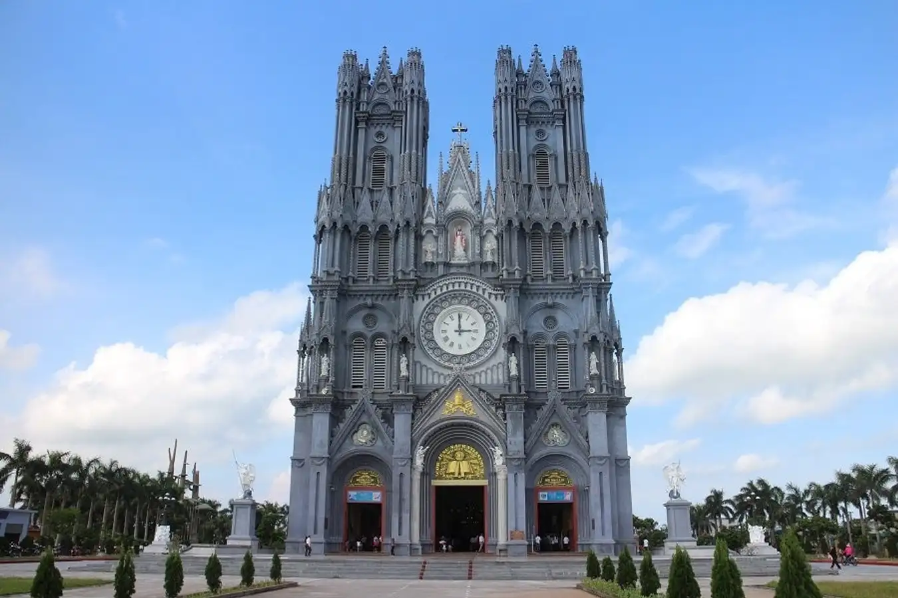
Bên cạnh những công trình tâm linh nổi tiếng như chùa thì Thái Bình còn có một công trình kiến trúc hoành tráng là nhà thờ Bác Trạch. Đây chính là một trong những nhà thờ lớn nhất Việt Nam hiện nay với hoa văn trang trí công phu theo lối kiến trúc Roman. Với vẻ đẹp này chắc chắn nhà thờ Bác Trạch là một địa điểm check-in Thái Bình độc đáo dành cho bạn. Địa chỉ nhà thờ Bác Trạch: Vân Trường, Tiền Hải, Thái Bình.
NHÀ THỜ CHÍNH TÒA

Nếu đã đến Thái Bình thì bạn chớ ngần ngại mà hãy đến tham quan ngôi chùa có lối kiến trúc đẹp, ấn tượng nhất tại Việt Nam. Khuôn viên nhà thờ mang lại không gian thoáng mát và bên trong là công trình kiến trúc mang đậm chất tôn giáo. Là một nhà thờ còn trẻ tuổi nhưng nơi đây lại là một trong những địa điểm check-in Thái Bình được nhiều người biết đến. Địa chỉ nhà thờ Chính Tòa: Số 8 đường Trần Hưng Đạo, phường Lê Hồng Phong, thành phố Thái Bình.
LÀNG DỆT CHIẾU HỚI
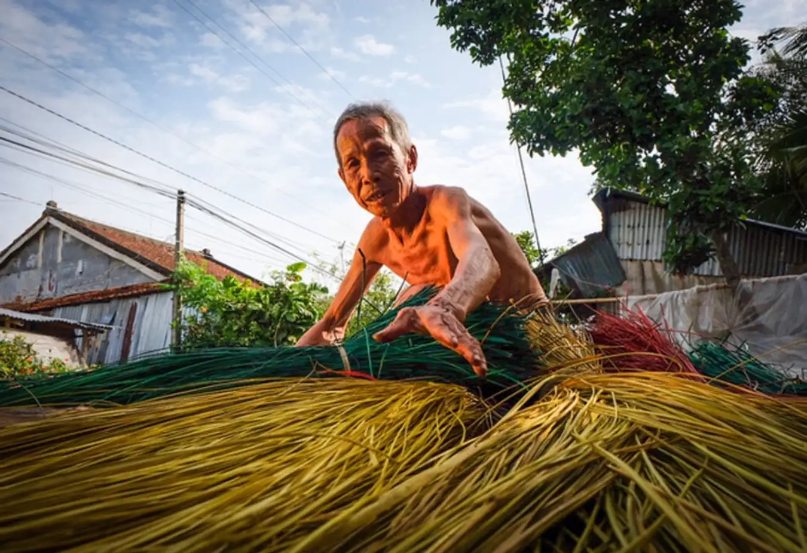
Bên cạnh vẻ đẹp của thiên nhiên và kiến trúc thì Thái Bình còn nổi tiếng với những làng nghề truyền thống gần hàng trăm năm tuổi. Trong đó phải kể đến làng nghề dệt chiếu Hới nổi tiếng gần xa tại xã Tân Lễ, huyện Hưng Hà, Thái Bình. Đây cũng sẽ là một địa điểm check-in Thái Bình đảm bảo mang lại cho album của bạn một màu sắc độc đáo và lạ mắt. Bên cạnh đó, bạn còn được hiểu thêm về cuộc sống giản dị của người dân trong làng. Và bạn sẽ được người dân giới thiệu về quy trình để tạo ra được một một chiếc chiếu truyền thống, từ thu hoạch chế biến cói cho tới khâu thành phẩm. Những trải nghiệm này sẽ là một kỷ niệm khó quên cho chuyến đi của bạn.
ĐỀN ĐỒNG BẰNG
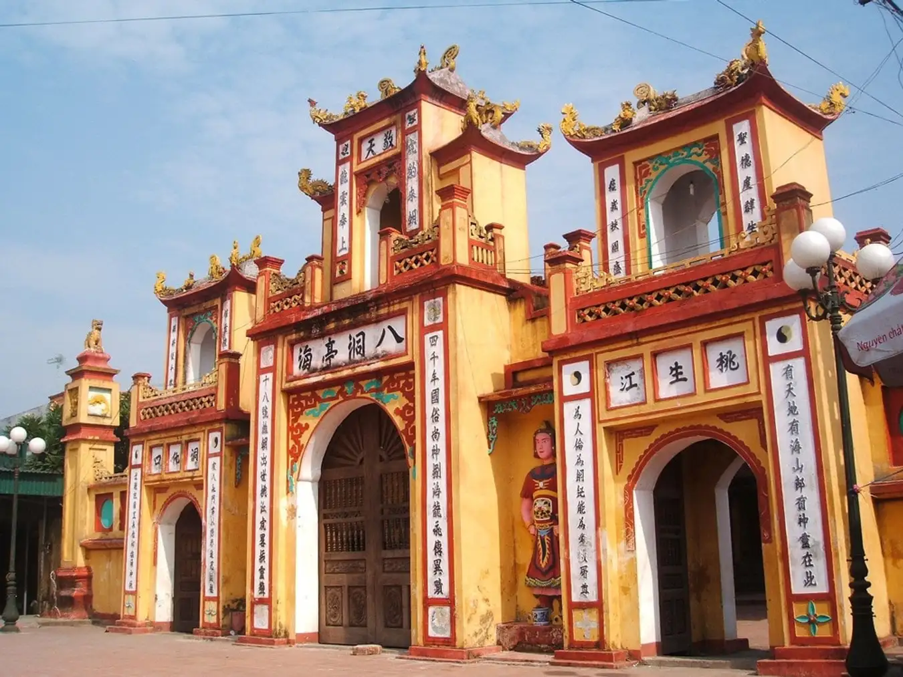
Vùng đất Bắc Bộ vốn là nơi lưu giữ những giá trị truyền thống cùng các công trình kiến trúc cổ xưa độc đáo, trong đó phải kể đến đền Đồng Bằng. Dù đã hơn 5000 năm tuổi, mà đến nay đền vẫn giữ được kiến trúc uy nghiêm, khi nằm bên dòng sông cổ Mai Diêm thì lại càng trở nên trầm mặc hơn. Có thể nói đây là một trong những địa điểm check-in Thái Bình nổi tiếng nhất hiện nay. Hằng năm, đền luôn là một điểm đến thu hút lượng lớn du khách đến tham quan và cầu mong những điều tốt đẹp cho gia đình. Địa chỉ đến Đồng Bằng: An Lễ, Quỳnh Phụ, Thái Bình.
ĐỀN THÁNH MẪU
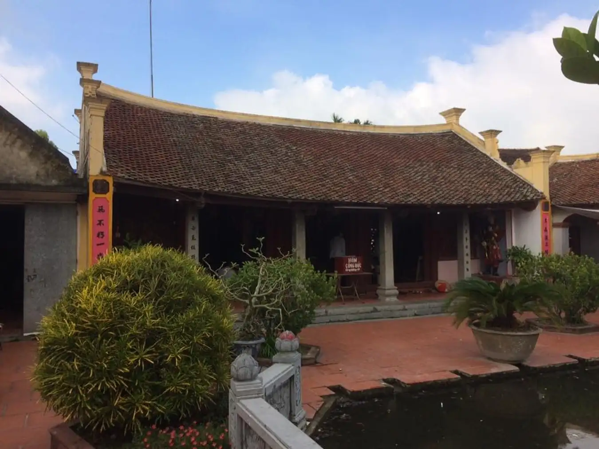
Thờ Mẫu là một trong những tục phổ biến của người dân Việt Nam, và vùng đất in đậm dấu ấn truyền thống văn hóa dân tộc như Thái Bình cũng sẽ có nơi để bà con sinh hoạt tục này. Trong đó phải nói đến đền Thánh Mẫu - là di tích lịch sử văn hóa thờ hoàng hậu Trinh Minh dưới thời nhà Đinh. Ngôi đền thờ Minh Trinh Hoàng Hậu thời nhà Đinh (còn được biết đến với tên húy là Đinh Thị Tỉnh). Tương truyền, Minh Trinh Hoàng Hậu là một người tài sắc vẹn toàn, từ năm 5 tuổi đã biết âm luật nhạc, văn tự chưa ai dạy đã biết. Vào thời loạn lạc, bà cùng 4 người anh trai phò tá Đinh Bộ Lĩnh diệt trừ 12 sứ quân (bà cũng là hoàng hậu nhà Đinh duy nhất tham gia cuộc dẹp loạn này). Về sau khi thái bình, Tiền Lê thay nhà Đinh, bà cùng con gái là công chúa Phù Dung trở về quê Thái Bình, cùng giúp người dân lập ấp, xây làng. Địa chỉ đền Thánh Mẫu: xã Đông Sơn, huyện Đông Hưng, tỉnh Thái Bình.
ĐỀN TIÊN LA
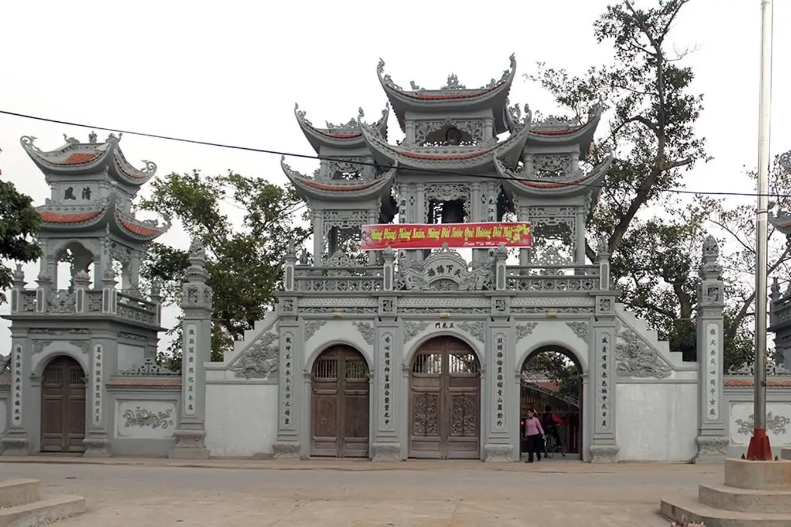
Đền Tiên La là một Di tích lịch sử cấp quốc gia với gần hàng ngàn năm. Đây còn là nơi ghi lại dấu ấn một trang lịch sử hào hùng và trở thành nơi nơi thờ Bát Nạn tướng quân Vũ Thị Thục. Bên cạnh đó, đền còn lưu giữ được rất nhiều món đồ từ thời nhà Lê và có giá trị vô cùng quý giá. Hiện nay, đền được mở rộng và trùng tu với quy mô lớn để du khách khắp nơi có thể dễ dàng đến viếng thăm. Vì thế mà đền Tiên La sẽ là một trong những địa điểm check-in Thái Bình độc đáo mà bạn không nên bỏ lỡ. Địa chỉ đền Tiên Lá: Tại thôn Tiên La, xã Đoan Hùng, huyện Hưng Hà, tỉnh Thái Bình.
Ẩm thực nổi bật
BÁNH NGHỆ
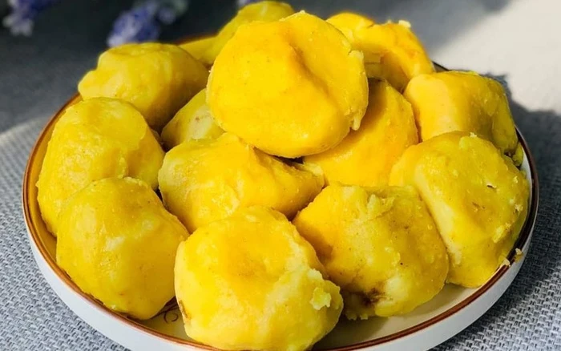
Nhắc đến đặc sản Thái Bình, thực khách không thể bỏ qua món bánh nghệ ngon trứ danh. Sở dĩ được gọi là “bánh nghệ”, vì bánh có màu vàng bắt mắt như nghệ. Người dân ở xã Tiền Hải, Thái Bình đã sáng tạo ra món bánh nghệ từ hai nguyên liệu quen thuộc là gạo tẻ và nghệ tươi. Lần đầu, nghe đến tên “bánh nghệ”, chắc hẳn bạn sẽ cảm thấy e dè vì sợ bánh có vị đắng và hăng của nghệ, tuy nhiên trong quá trình làm bánh, người dân đã mang nghệ đi rửa sạch, luộc chín và giã lấy nước rồi mới nhào với bột, nhờ đó bánh có màu sắc đẹp mắt, thơm và không hăng mùi nghệ. Bánh nghệ có phần nhân được làm từ hành củ, tóp mỡ, bột quế được xay nhỏ, thêm một chút nước mắm rồi mang đi hấp. Bánh chín thường được bán ở các khu chợ quê ở Thái Bình, ngon nhất là khi ăn bánh còn nóng và trong thời tiết lạnh.
GỎI NHỆCH
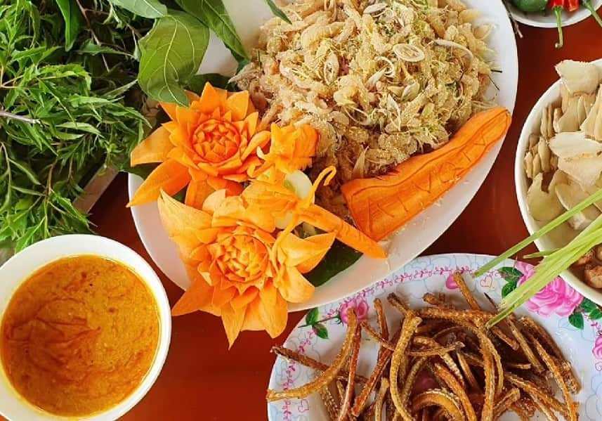
Gỏi nhệch là đặc sản Thái Bình với hương vị độc đáo, ấn tượng. Nhệch là một loại cá có ngoại hình gần giống lươn. Người ta dùng tro để làm sạch nhớt trên mình nó rồi mới đem đi chế biến thành các món ăn. Với món gỏi nhệch, sau khi sơ chế, cá được cắt lát mỏng, trộn thính. Phần da được cắt thành miếng rồi chiên giòn. Xương cá được giã nhuyễn nấu thành nước chấm hấp dẫn – chẻo. Chẻo nấu xong, pha với gừng, tỏi, ớt, hạt tiêu, sả băm nhỏ. Khi thưởng thức món ăn, người Thái Bình thường cuốn gỏi nhệch với lá sung, rau sống, chấm chẻo.
BÁNH GAI ĐẠI ĐỒNG
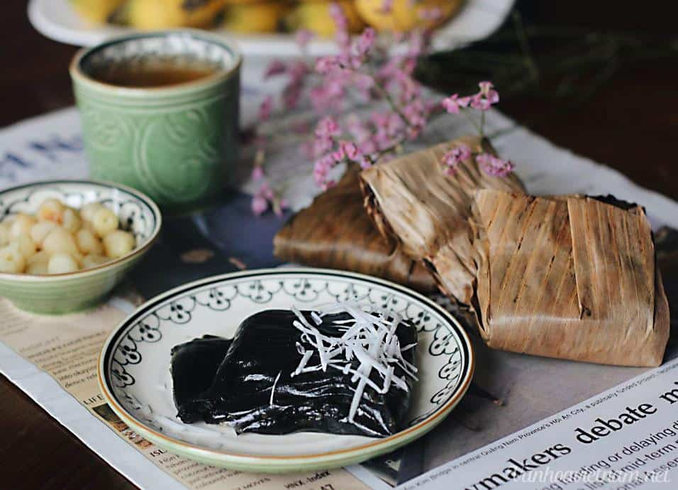
Bánh gai là món bánh đặc sản Thái Bình có xuất xứ từ làng Đại Đồng – xã Tân Hòa – huyện Vũ Thư, nơi nổi tiếng với những món ăn dân dã, độc đáo. Bánh gai Đại Đồng có tuổi đời hơn 500 năm, được làm thủ công qua những bàn tay khéo léo của người dân nơi đây, tạo nên món ăn mang hương thơm của lá gai và có vẻ ngoài màu đen độc đáo. Nếu có dịp ghé thăm Thái Bình, bạn đừng quên mua bánh gai làm quà cho gia đình hay người thân.
GIÒ CHẢ TIỀN HẢI
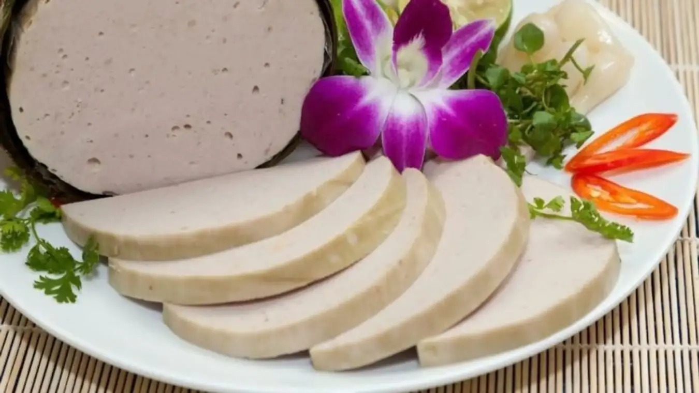
Giò chả là món ăn quen thuộc của nhiều người dân Việt Nam. Ở huyện Tiền Hải, tỉnh Thái Bình có món giò chả mang hương vị rất riêng so với các địa phương khác. Giò chả nơi đây được người dân chế biến từ thịt lợn sạch và tươi 100%, giò phải giữ được độ dai vừa phải, được nêm nếm gia vị vừa ăn. Ăn ngon là một chuyện, hình thức đóng gói giò chả cũng được người dân nơi đây chú trọng từng chút để thành phẩm khi đến tay khách hàng sẽ tròn đều và đẹp mắt.
NƯỚC MẮM DIÊM ĐIỀN
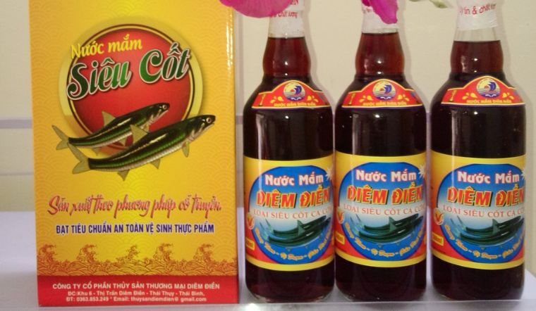
Thị trấn Diêm Điền (Thái Thụy) có rất nhiều đặc sản nổi tiếng từ biển, trong đó không thể kể đến là nước mắm. Người dân nơi đây luôn giữ được bí quyết làm nước mắm truyền thống, hoàn toàn bằng phương pháp thủ công, không có bất kỳ chất xúc tác bằng hóa học nào. Những con cá tươi ngon được đánh bắt kết hợp cùng công thức riêng mang đến những chai nước mắm chất lượng và được lòng nhiều thực khách. Nước mắm tại đây cũng được đóng gói an toàn, thẩm mỹ nên bạn có thể mua làm quà tặng cho người thân hay bạn bè.
CHẢ RƯƠI KIẾN XƯƠNG
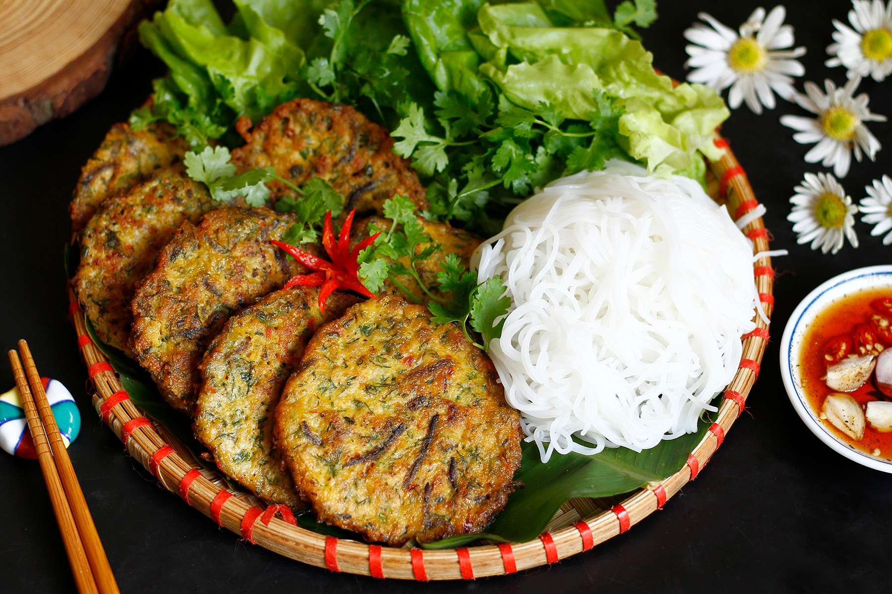
Huyện Kiến Xương, tỉnh Thái Bình có món chả rươi Hồng Tiến được nhiều người yêu thích. Rươi là loài nhuyễn thể, thường sống ở môi trường nước mặn hoặc nước lợ, nhìn bên ngoài, con rươi khá giống với giun đất. Rươi khá quý hiếm, chỉ xuất hiện nhiều vào độ tháng chín, tháng mười âm lịch hàng năm. Thịt rươi được dùng để chế biến thành các món ăn như: làm chả, xào, nướng, nấu, om, kho, làm mắm… Trong đó, ấn tượng nhất vẫn là món chả rươi (rươi nướng). Với nhiều người khi nghe đến con rươi, có vẻ thấy sợ nhưng nếu ăn được thì sẽ không quên hương vị của nó. Các món ăn làm từ rươi đều có vị ngọt, béo ngậy, có mùi thơm riêng, góp phần làm cho các bữa ăn hằng ngày thêm hấp dẫn.
HOẠT ĐỘNG NỔI BẬT
LỄ HỘI CHÙA KEO
Tại chùa Keo Thái Bình, mỗi năm tổ chức hai mùa lễ hội. Hội xuân được mở vào ngày mồng 4 tháng Giêng. Hội thu được mở vào các ngày 13, 14, 15 tháng 9 âm lịch và là hội chính nhằm tưởng nhớ, suy tôn Ðức thánh Thiền sư Không Lộ. Nếu như lễ hội mùa xuân vừa là lễ hội nông nghiệp vừa là lễ hội thi tài gắn với sinh hoạt của cư dân nông nghiệp vùng sông nước thì lễ hội mùa thu ngoài tính chất là hội thi tài giải trí còn mang đậm tính chất của một lễ hội lịch sử. Lễ hội chùa Keo hiện còn bảo lưu nguyên vẹn nhiều nghi thức truyền thống như: khai chỉ mở cửa đền Thánh, tế lễ Phật thánh trong nội tự chùa, rước kiệu Đức thánh…
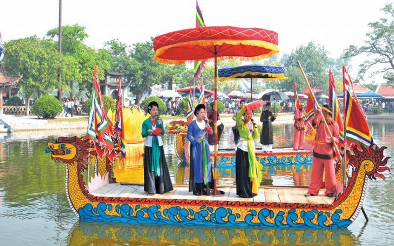
Cùng với các nghi lễ độc đáo, lễ hội chùa Keo còn có các cuộc thi tài, các trò chơi dân gian đặc sắc không đâu có như thi bắt vịt, thi nấu cơm, thi ném pháo, thi thày đọc, thi kèn, thi trống, múa ếch vồ, bịt mắt đánh trống, leo cầu ngô… Thông qua các trò chơi dân gian truyền thống, hình thức biểu diễn nghệ thuật phản ánh lối sống của vùng dân cư nông nghiệp của đồng bằng Bắc Bộ nói chung, Thái Bình nói riêng.Lễ hội chùa Keo cũng là nơi cư dân nơi đây nói riêng và khách thập phương gửi gắm ước mơ, khát vọng về cuộc sống ấm no, hạnh phúc. Lễ hội chùa Keo có một ý nghĩa rất lớn đối với đời sống tinh thần của người dân, là hình thức sinh hoạt văn hóa thu hút sự tham gia của đông đảo quần chúng nhân dân. Mọi người đến với lễ hội đều mong muốn những điều tốt đẹp nhất đến với mình, gia đình và cộng đồng làng xóm.LỄ HỘI ĐỀN TRẦN (HUYỆN HƯNG HÀ)
Khu di tích đền Trần hiện là nơi đặt tôn miếu và lưu giữ mộ phần của các liệt tổ nhà Trần, của Thái tổ Trần Thừa và ba vị vua triều Trần là Trần Thái Tông, Trần Thánh Tông và một phần ngọc cốt của Đức vua Phật hoàng Trần Nhân Tông.
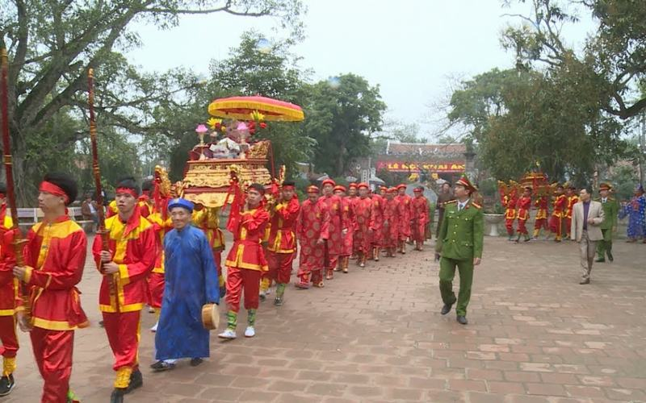
Đây là một tổng thể kiến trúc rộng lớn, các công trình kiến trúc được bố trí theo trục chính, chia thành các không gian như: không gian hành lễ, không gian nội tự đền, không gian vườn cây xanh, là một công trình kiến trúc kế thừa và phát huy truyền thống kiến trúc dân tộc - kiến trúc đình làng. Lễ hội Đền Trần Thái Bình – Di sản văn hóa phi vật thể Quốc gia được tổ chức từ ngày 13 đến 18 tháng giêng hàng năm tại xã Tiến Đức, huyện Hưng Hà với phần Lễ và phần Hội truyền thống mang đậm bản sắc văn hoá của dân tộc như lễ rước nước, thi cỗ cá, thi pháo đất và nhiều trò chơi dân gian khác. Lễ hội đền trần là 1 trong những lễ hội ở Thái Bình hấp dẫn du khách khắp nơi.LỄ HỘI ĐỀN ĐỒNG BẰNG
Đền Đồng Bằng tọa lạc trên đất An Lễ huyện Quỳnh Phụ tỉnh Thái Bình ngày nay. Đền Đồng Bằng là nơi thờ đức Vua cha Bát Hải Động Đình, người có công lớn trong việc bình Thục giữ nước và chiêu dân lập ấp xây dựng giang sơn xã tắc từ buổi sơ khai. Đền có sắc phong Tam Kỳ Linh Ứng Vĩnh Công Đại Vương Tối Thượng Đẳng Linh Thần.
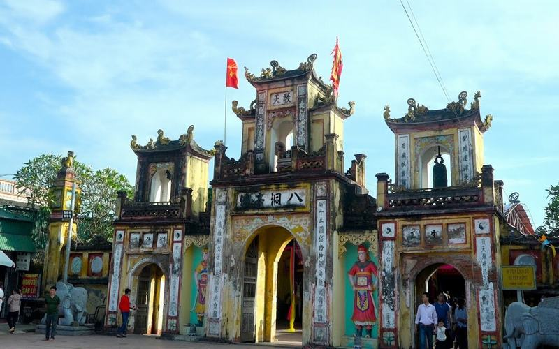
Từ cuối thế kỷ XIII còn là nơi tưởng nhớ Hưng Đạo Đại Vương Trần Quốc Tuấn cùng các danh tướng hoàng thân quốc thích nhà Trần có công lớn trong ba lần đại phá quân Nguyên Mông và lập nên tám trang Đào Động xưa. Đối với những người tín ngưỡng đền Đồng Bằng là ngôi đền linh thiêng bậc nhất để họ đi trình về tạ, còn đối với du khách nam thanh nữ tú thì đền Đồng Bằng như một viên ngọc quý đặt giữa vùng quê Thái Bình. Hội kéo dài từ ngày 20 đến 26 tháng 8 âm lịch. Hội đền Đồng Bằng là một hội tứ phủ lớn trong vùng. Đây là dịp tập hợp lớn nhất của các ông đồng, bà cốt từ khắp mọi miền. Trong lễ hội ngoài phần “lễ” là các nghi lễ tế thần, dâng hương, diễn lại tích xưa vua cha đi đánh giặc, còn phần “hội” cũng diễn ra khá sôi động với những trò chơi mang đậm tính dân gian như: hát văn, kéo co, bơi trải, chọi gà, cờ tướng... thu hút rất đông người dân tham gia. Đến với lễ hội, du khách không chỉ bái vọng mà còn được tham quan, chiêm ngưỡng nhiều đồ tế khí có giá trị, cùng các bài vị từ thời Nguyễn, những công trình kiến trúc đồ gỗ độc đáo như: cuốn thư, hoành phi, câu đối, đại tự... từ thời Khải Định, Bảo Đại vẫn còn được lưu giữ nguyên vẹn.PHƯƠNG THỨC DI CHUYỂN
Du lịch Thái Bình, các bạn có nhiều phương tiện đi lại như Taxi, xe buýt, xe ôm, đi thuyền. Dịch vụ xe buýt ở Thái Bình khá đa dạng, nhiều chuyến chủ yếu trong thành phố đi một số huyện, chủ yếu phục vụ dân địa phương, công nhân, học sinh .